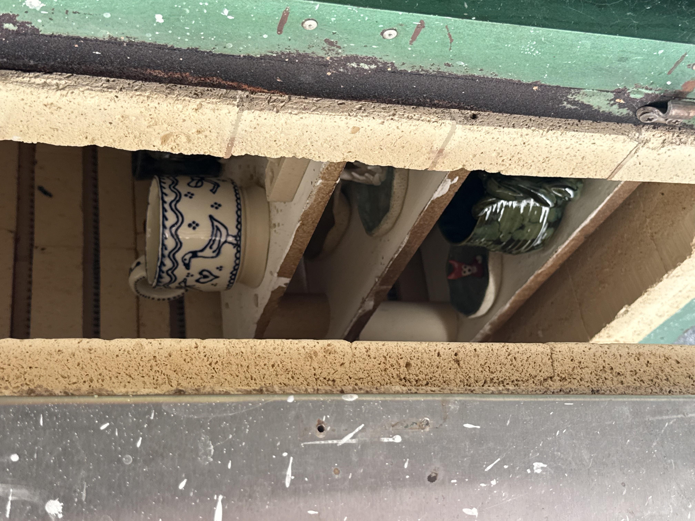

Hello, I'm Bonnie.
I'm a mother of five and wife to my high school sweetheart, Matthew. Together we've built a slow, peaceful life — low-tox, low-screen, and analog, with nostalgic nods to lost traditions and the quiet art of memory-making.
I steal pockets of time from a busy life to create, and to inject a little whimsy into the world. When I'm not painting hidden animals on our walls, putting together a care basket for a friend, or mucking out the stables of our rescued farm animals, you'll find me in my home pottery studio or sewing caravan making one-off pieces.
My story
Originally from Darwin, I moved to Brisbane for school and met my husband when I was thirteen. After school I got my teaching degree and married my high school sweetheart. We became biological parents and foster carers, and moved onto a small acreage where we started a rescue hobby farm. Now we live on a small, hidden acreage on the outskirts of west Brisbane with our five children and a myriad of rescued farm animals.
I first began sewing in primary school and got my first sewing machine when I was fifteen. I've always dabbled in painting and drawing — when I was ten I'd pull the ink out of my markers and dye fabric in the bathroom sink to sew into little outfits. Art and making have always come naturally to me, but I didn't feel the confidence to pursue them as a young adult. I chose a "respectable and safe" career as a teacher instead.
I owe much of my confidence to eventually pursue my art to my husband, who has helped me bring our crazy, beautiful life to fruition. After a pottery course we went to as a cute date idea, I was completely obsessed. Fast forward to now, and he's built me an at-home pottery studio among the eucalypts and kookaburras, complete with a kiln and a wheel.
My process & inspiration
These days, creating looks like little pockets of time between school runs and naps. The kitchen table is usually covered in paintbrushes, papers or clay.
The pieces I make come from a whimsical, earthly, playful place my inner child would have dreamed about — tiny worlds, miniature creatures and make-believe. The little details in a leaf, or the wing of a butterfly you keep in a glass jar. The treasures you collect throughout your life, and the value you place on them.

"The treasures you collect throughout your life, and the value you place on them — the value is for you, and no one else."